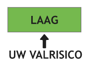

U had onlangs een afspraak bij de Valkliniek.
U heeft toen samen met de dokter uw valrisico besproken.
Ook heeft u samen met de dokter een plan met adviezen opgesteld.
U vindt op deze pagina de volgende informatie:
laden ...
Als u bijwerkingen of andere gezondheidsproblemen krijgt, neem dan contact op
met uw huisarts, het ziekenhuis, of uw apotheek.
laden ...
Bespreek het met uw doktor als het niet lukt om deze adviezen op te volgen.
De gemiddelde oudere persoon heeft een 30% kans om te vallen binnen de komende jaar.
Het volgen van het advies hieronder helpt om deze kans te verlagen.
Deze tips helpen de ouderen die de valpoli bezoeken om zich beter aan hun persoonlijk advies te houden:
Print uw advies
U houdt zich beter aan uw persoonlijk advies als u deze vaak ziet.
Print uw persoonlijk advies uit en hang deze op een goed zichtbare plek.
Bijvoorbeeld: op de koelkast, boven uw bureau of werktafel of bij uw kalendar.
Maak een plan
Maak een concreet plan om u aan uw advies te houden.
Klik op de link onder deze afbeelding om te lezen hoe u een plan opstelt.
Bespreek uw advies én uw plan
Bespreek uw advies en uw plan met naastbetrokkenen, mantelzorgers en/of mensen die u helpen.
Anderen kunnen helpen u beter aan het advies en plan te houden, als zij uw advies en plan kennen én begrijpen.
Bezoek dit portaal
Bezoek dit portaal regelmatig.
U vindt hier immers alle informatie en adviezen die u nodig heeft!

Verlaag uw valrisico
Uw dokter vindt het belangrijk dat u een laag valrisico heeft.
Als u zich goed aan uw advies houdt, verlaagt u uw valrisico.
Blijf zelfstandig
Als u een lager valrisico heeft, blijft u langer mobiel.
Dit zorgt ervoor dat u langer zelfstandig en onafhankelijk kunt blijven.
Voel minder zorgen
Maak een concreet plan om u aan uw advies te houden.
Klik op de link onder deze afbeelding om te lezen hoe u een plan opstelt.